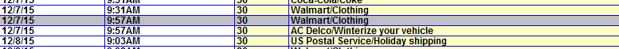
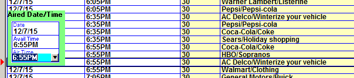
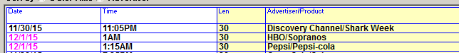
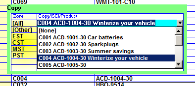
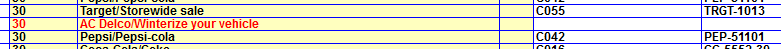

Changing Air Dates and Time and Copy
Aired dates and aired times can be changed, and copy can be changed as needed on the Post Log screen.
Note: When making changes on the Post Log screen, the changes that are made are saved automatically.
When clicking on a spot, the entire line will be shown with a gray background to make it easier to see the information for the selected line.

Air Date and Time Changes
To change a spot aired date or time, mouse click in the date or time field and edit or enter a new date or air time, then press Tab to move to the next spot aired time.

When a cross midnight aired time is entered – for example on a live sports event that ran past midnight – when editing the air time to be past midnight, the air date will advance automatically. The aired date for cross midnight spots will also be displayed in magenta text, as shown in the image below.

Copy/ISCI Changes
To change the ISCI for a spot, mouse click the Copy or ISCI Code field, and select the correct copy from the dropdown list. The list of copy shows all copy, in and out of flight, associated with the advertiser.

Copy can be selected for all time zones by selecting the copy from the “All” line or for individual time zones if needed.
If a spot is missing copy, the spot will be shown in red, with a blank value in the Copy and ISCI code field.

Click in the copy or ISCI code field and select the correct copy for the missing spot to assign copy to the spot.